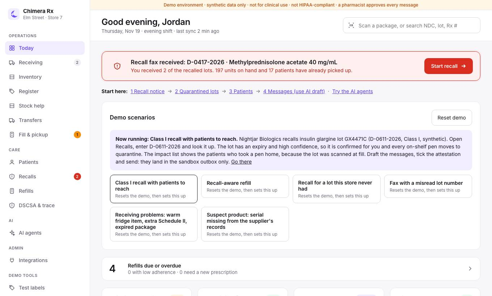
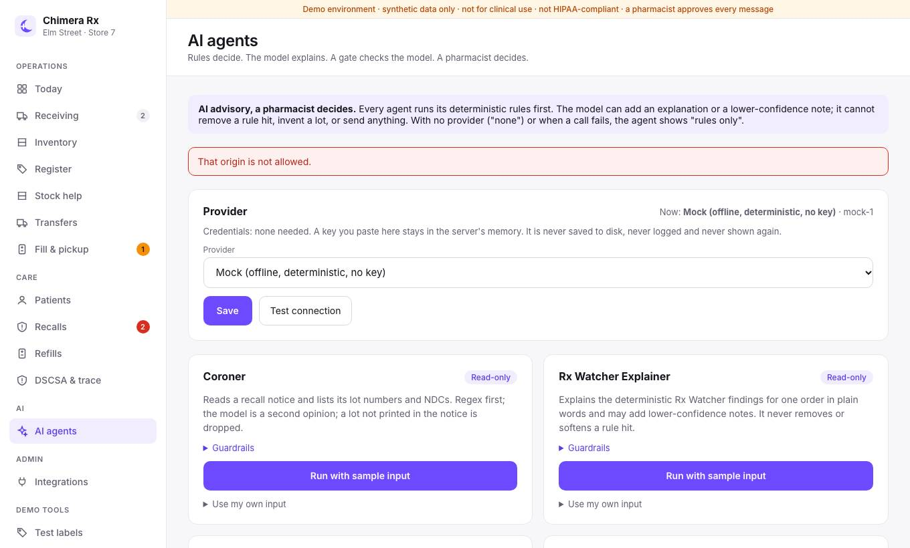

Chimera Rx
A pharmacy lot ledger that records which lot and serial each patient took home. When the FDA recalls a lot, Chimera Rx finds the units on the shelf and the patients who took one home, and drafts the messages. A pharmacist approves every step.
Kiroween 2026, Frankenstein category. Built with Kiro.
The gap
Wholesalers track drugs by lot. Dispensing systems track drugs by patient. Nobody links the two, so a recall means warning everyone or no one.

Try it
git clone <this repo> cd chimera-rx docker compose up # then open http://localhost:4000 # or, with Node 22.5+ and pnpm 12: pnpm install --frozen-lockfile pnpm setup pnpm dev # open http://localhost:5173
Sign in as j.rivera@elmstreetrx.example with moonlight-rx-2026 (pharmacist). Then pick a scenario on the Today screen. The Docker image build was not run on the machine that wrote this repo.
What it does
| Gap | Feature |
|---|---|
| A recall does not say who got the lot | Recall to shelf units and patients, quarantine, approved outreach |
| The lot is never captured | GS1 DataMatrix and OCR at receiving and at fill |
| Order errors reach the patient | Rx Watcher rules, prescriber change loop |
| Traceability data is hard to exchange | EPCIS 2.0 export, sandbox verifier, suspect cases |
| Refills ignore recalls | Recall-aware refills, adherence, med sync |
| Front store is separate | Register with verified prescriptions |
| Chains share stock | Two stores, transfers, mirrored recalls |
| AI is a black box | Seven gated agents; Bedrock by default, swappable provider |
| Other systems cannot ask | REST, MCP and FHIR with scoped keys |

Documents
- Demo script: 3-minute and 8-minute paths
- Architecture
- AI agents and providers
- Safety rules mapped to code and tests
- Security and patient data: what is encrypted and what is not
- DSCSA traceability with EPCIS and refills
- How Kiro was used, and what was not verified
- Lot extraction on 50 real openFDA recall records
- Recall to affected-patient list timing
Demo video
Not recorded yet. The demo script above has the same steps.
Demo environment · synthetic data only · not for clinical use · not HIPAA-compliant · a pharmacist approves every message